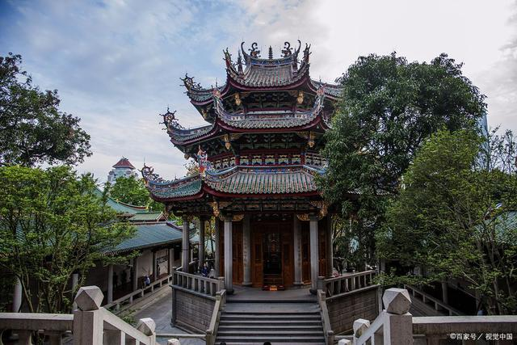
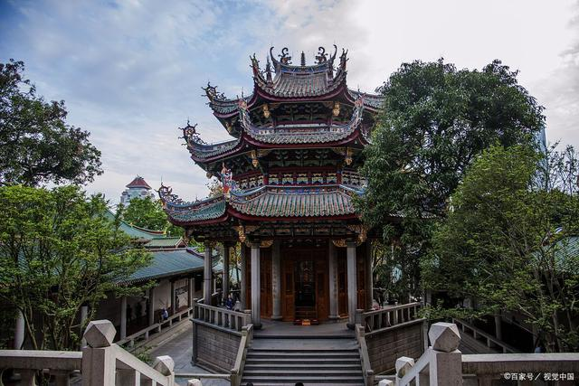

Gulangyu Island


The third picture is about the Bagua Building in the Gulangyu Island. It has been through four investment gruops, and was buit into China's only organ Museum in 2005.
Xiamen(also known as Amoy) is a coastline city in Fujian, China . Its total area is 1700.61 square kilometers, and it faces the Taiwan Strait. Xiamen is famously called "The Egret Island", because its environment is very clean and many Egrets live in Xiamen. Gulangyu Island is the most famous touring spot in Xiamen, it is known as the "Island of Music."Other famous touring spots in Xiamen include The Xiamen Botanical Garden, The Mountain & Sea Trail, The Twin Tower, and The Sea Pearl Tower. Some famous foods in Xiamen incude oyster omelets and Sha Cha Noodles.
The third picture is about the Bagua Building in the Gulangyu Island. It has been through four investment gruops, and was buit into China's only organ Museum in 2005.
 

The Nanputuo Temple was first built in the late Tang Dynasty. It is one of the sixth batch of provincial-level cultural relics protection unit in Fujian Province.


The Moutain & Sea Trail is a beautiful trail that runs through the whole Xiamen City. You can view both the the beach and the mountain on the trail.

The Xiamen Botanical Garden has a very beautiful escalator in in the southern Gate(look picture two),the esclator has six sections. There is a viewing platform on top of every section.


The Sea Pearl Tower is a weather forcast station on Huwei Mountain. There are many cultural exhibits on the 18th floor, and you can also view beautiful scenery on the 19th floor.

The Xiamen Science & Technology Museum has lots of different display section, like the mars section, the robot section and the ocean section. It is a fun place to visit.


The Twin Towers of Xiamen are a good place for viewing scenery, touring, dining, relaxation and entertainment. It is Xiamen's landmark.